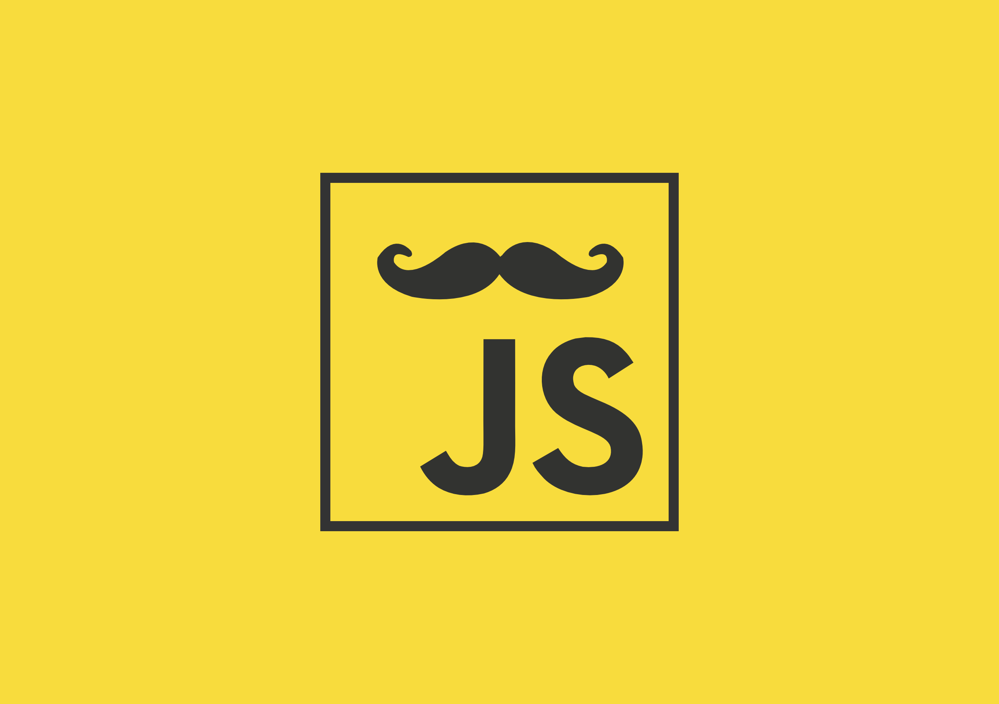
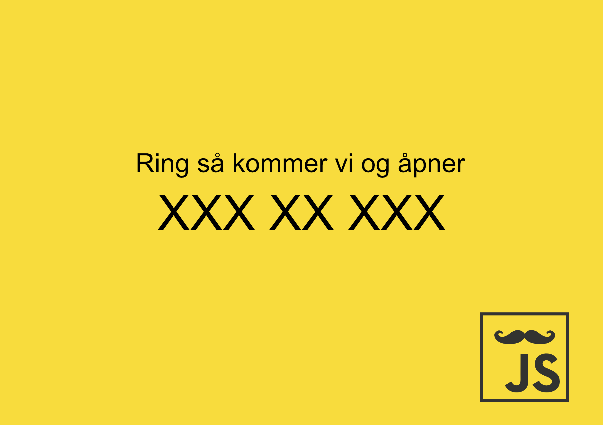

Farger.
Fargepaletten består av 5 farger som benyttes om hverandre. Den første gulfargen er hovedfargen som benyttes i forbindelse med logo e.l. Den lyse varianten av gulfargen brukes i kombinasjon med den første for å lage en oppdeling. Denne benyttes feks. på venstre side i heksagonet.
- #f8dc3d
- #f7e342
- #26a8ed
- #333333
- #ffffff
Logoer.
Essensen i BartJS' logo er barten. Vi har varianter av denne hvor den blir brukt blant annet sammen med teksten JS. I Podcast-sammenheng benyttes logoen i et heksagon sammen med en mikrofon.
BartJS-logoen kommer i flere varianter. Hovedlogoen består av en bart med teksten, JS.
Heksagon.
En variant av logoen er barten presentert i et heksagon med to forskjellige gulfarger. Heksagonet kan ha hvit eller grå ramme, eller ingen ramme.
I Podcast-sammenheng benyttes heksagonlogoen med en mikrofon.
Nedlastninger.
Prints.
Ved anledninger som Meetups bruker vi prints for å geleide deltakere til riktig rom o.l.


Forside / bakside.
Disse henges opp i lokalet for å gjøre det klart for besøkende hvor de skal gå, og for å informere om ev. ting de må foreta seg for å komme inn i lokalet. Plakatene er bekrefet å passe inn på et A5-ark.
Bilder.
En knippe kule bilder vi bruker!